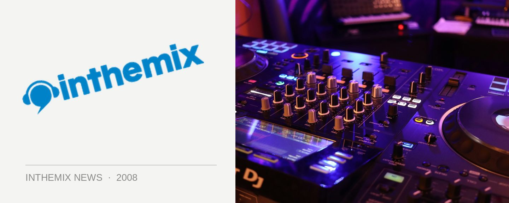

Catch Kora this January
One of the next wave of new Zealand acts tipped to make it big, Kora bring a unique concoction of dub, funk, reggae, hard rock, blues, house music and whatever else, and you’ll be able to catch them again in Australia this January. After their last tour of Australia in late 2007, the band released their debut self-titled album that shot straight to the top of the New Zealand charts, debuting at the coveted #1 slot! With Kora now in the record stores, you’ll be able to catch the boys showcasing the tunes from the release.
Catch Kora at the following shows…
Friday 18th January, Brisbane @ The Arena
Saturday 19th January, Sydney @ Beck’s Festival Bar